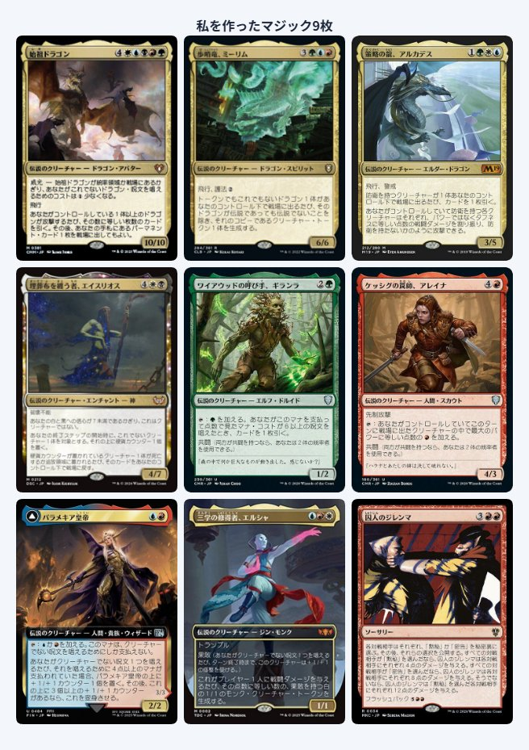

ClaudeCoworkを
使ってみよう！
👑 主催
 そういちろう
そういちろう
👑 placeholder

リベシティ Claude Cowork オフ会
ファイル整理
Web調査
自動化
リベシティ Claude Cowork オフ会
誰でも使いやすい。チャット感覚でPC操作・ブラウザ操作・ファイル作業まで進められます。

エンジニア向け。ターミナルで動作し、コード編集や開発作業を強力に進められます。

初心者はまず Cowork を触ってみよう!

公開した画面のイメージです。